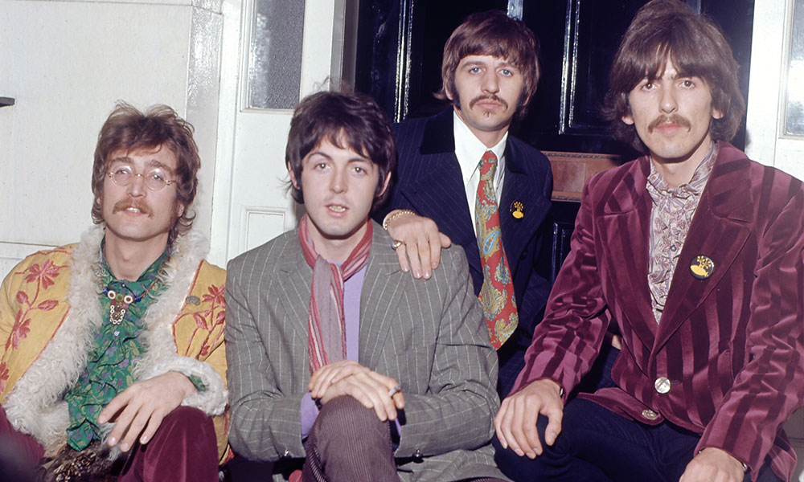

The Beatles; также группу называют «Ливерпульской четвёркой» (англ. Liverpool Four); отдельно участников ансамбля называют «битлами»; в английском языке также распространено упоминание группы как Fab Four — «Великолепная четвёрка») — британская рок-группа из Ливерпуля, основанная в 1960 году, в составе которой играли Джон Леннон, Пол Маккартни, Джордж Харрисон и Ринго Старр.
 Ссылка на полную статью